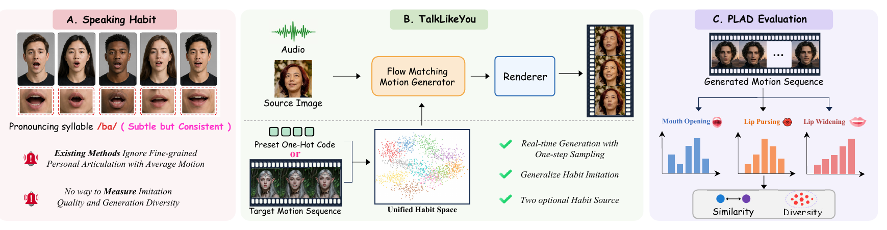
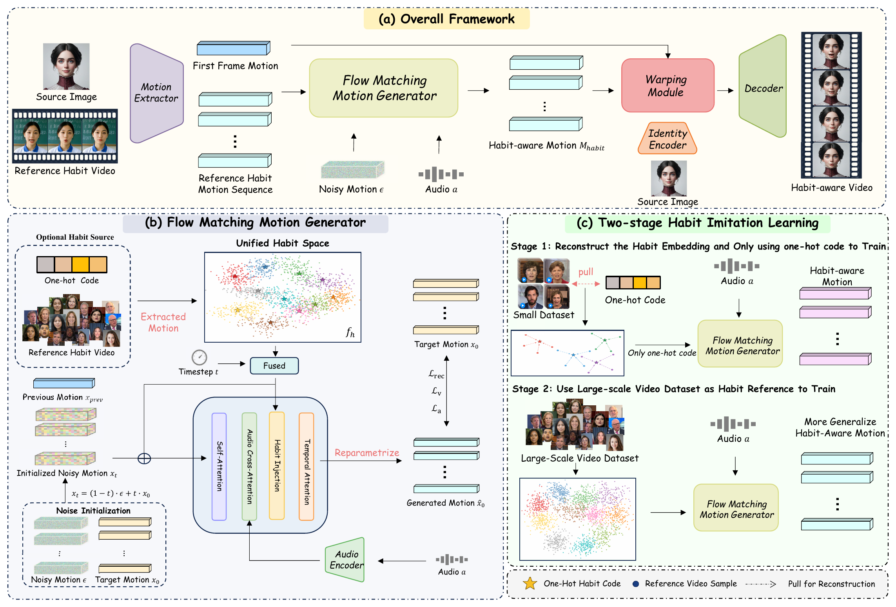

Lip-Sync Comparison
Use the arrows to switch between the two comparison examples.
1 / 2
1 MAIS, Institute of Automation, Chinese Academy of Sciences
2 School of Artificial Intelligence, University of Chinese Academy of Sciences
3 CAIR, HKISI, Chinese Academy of Sciences4 SCSE, FIE, M.U.S.T.

Paper
In daily life, each person exhibits unique speaking habits, leading to subtle yet consistent lip-shape variations even when pronouncing the same word. Although recent talking head generation methods have achieved impressive visual fidelity and lip synchronization, they largely overlook user-specific customization, especially the motion patterns that characterize individual speaking habits. These habits are difficult to model and capture, as their motion patterns are highly fine-grained and often similar across individuals. As a result, many approaches produce overly uniform facial motions and fail to capture diverse, person-specific articulation patterns. To address this, we propose TalkLikeYou, an efficient framework that imitates how a target person speaks in talking head generation. Our method models habit in motion-space and achieves real-time performance through Flow Matching with only one sampling step during inference. We further adopt a two-stage imitation learning strategy to capture subtle distinctions between habits, allowing users to specify a target habit through either a preset style from the dataset or a reference video. In addition, we introduce a new metric PLAD that projects mouth motions onto representative articulation axes to evaluate imitation accuracy and generation diversity. Extensive experiments demonstrate that TalkLikeYou generates high-quality talking heads in real-time and significantly improves speaking habit imitation compared with prior methods.
TalkLikeYou
TalkLikeYou

Evaluation
Use the arrows to switch between the two comparison examples.
Comparison of target speaking-habit imitation across methods.
Results
Generated examples with different target speaking habits.
TalkLikeYou applied to stylized source portraits.
Interactive Demo